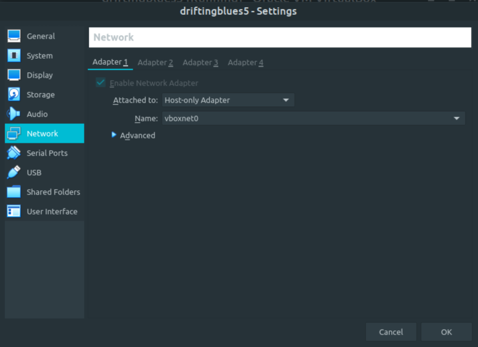
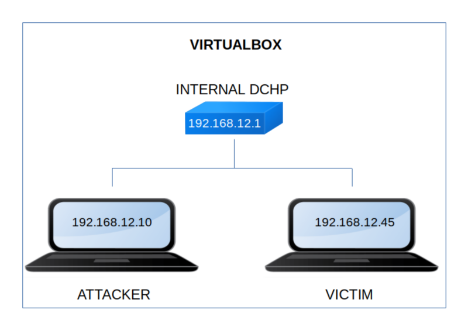

DriftingBlues 5
▸ DriftingBlues 5
▸ 1. Scan Network
▸ 2. Finding Services and Ports
▸ 3. Enumerate
▸ 3.1 Generate password list
▸ 3.2 Wpscan
▸ 3.3 Login Wordpress
▸ 3.4 Data exfiltration with exiftool
▸ 4. Exploitation
▸ 4.1 Connect via SSH (First flag)
▸ 5. Privilege Escalation
▸ 5.1 Cracking a "keepass db" file
▸ 5.2 Check for SUID files
▸ 5.3 Linux enumeration using linpeas.sh
▸ 5.4 pspy2 – Unprivileged Linux Process Snooping
▸ 5.5 Create file with passwords
▸ 5.6 Catch the second flag.
Difficulty: Easy.
Flag: 2 flags.
Learning:
• Reconnaissance
Scan Network
Find services
• Enumerate
Generate password list from website
Wpscan to get user from Wordpress
Login Wordpress
Data exfiltration with exiftool
• Exploitation
Connect via SSH
• Privilege Escalation
Crack a keepass db file
Check for SUID files
Linux enumerate with linpeas
Snoop unprivileged proccesses
Create a file with passwords
• Download (Mirror): https://download.vulnhub.com/driftingblues/driftingblues5_vh.ova
• Download (Torrent): https://download.vulnhub.com/driftingblues/driftingblues5_vh.ova.torrent
Install the machine on VirtualBox:
1. Download the file.
2. On Virtualbox choose File->Import Appliance.
3. Select the file “ova”.
4. Accept to import.


Watch your Machine IP.
$ ifconfig
Output:

Diagram
